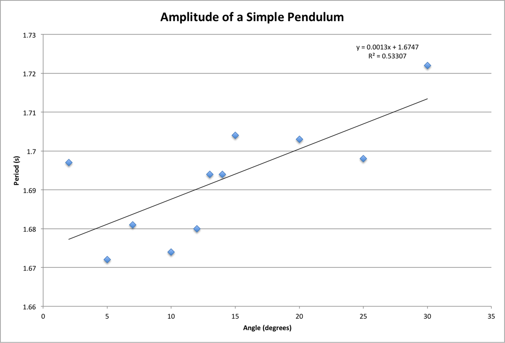
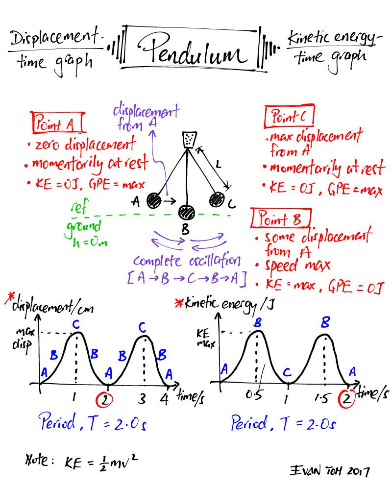
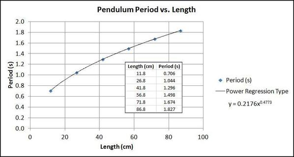
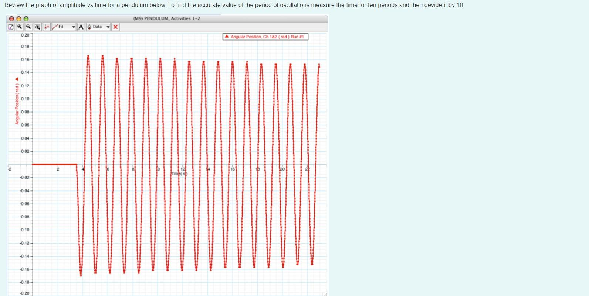

Measuring Earth's Gravitational Acceleration with a Pendulum
📘 Theoretical Background
The acceleration due to gravity \(g\) is a fundamental physical constant that varies slightly across Earth's surface due to latitude, altitude, and geological structure. A simple pendulum provides an elegant and accessible method for measuring this constant.
For small angular displacements (\(<15^\circ\)), the period \(T\) of a simple pendulum is related to its length \(L\) and the gravitational acceleration \(g\) as:
🧪 Experimental Setup
Materials
- 1–1.5 m string
- Metal bob (e.g., keychain or coin bag)
- Ruler or tape measure (1 mm resolution)
- Stopwatch or smartphone timer (0.01 s resolution)
- Fixed support (e.g., rod or frame)
Setup Steps
- Secure the string to the support.
- Tie the bob to the other end.
- Measure the pendulum length \(L\), from the support to the center of the bob.
- Ensure clear swing path and small angle displacement (<15°).
📷 Visual Reference:
📏 Measurement Procedure
Length
- Measure \(L = 1.000 \, \text{m}\)
- Ruler resolution = 1 mm → \(\Delta L = 0.0005 \, \text{m}\)
Period Measurement
- Displace <15° and release.
- Time 10 oscillations → repeat 10 times.
| Trial | Time for 10 oscillations (s) |
|---|---|
| 1 | 20.12 |
| 2 | 20.08 |
| 3 | 20.15 |
| 4 | 20.10 |
| 5 | 20.13 |
| 6 | 20.09 |
| 7 | 20.11 |
| 8 | 20.14 |
| 9 | 20.07 |
| 10 | 20.11 |
Calculations
✅ Final Result:
📊 Visualizations
Period vs. Length

Confirms theoretical relationship \(T^2 \propto L\)
Period vs. Amplitude

Shows increase in period with amplitude beyond small angle approximation
Motion Analysis

Swing Time by Length

Angular Displacement Over Time

📉 Error Analysis
Systematic Errors:
- Center of mass hard to locate
- Air resistance on lighter bobs
- Slightly elastic string
- Angle >15° affects model
Random Errors:
- Reaction time in stopwatch
- Miscounting oscillations
- Inconsistent release angles
Quantitative Summary
- \(\Delta L\) contributes \~0.05% error in \(g\)
- \(\Delta T\) contributes \~0.08%
- 15° angle introduces \~0.4% theoretical deviation
🧮 Comparison with Standard
- Standard \(g = 9.81 \, \text{m/s}^2\)
- Measured \(g = 9.77 \pm 0.01 \, \text{m/s}^2\)
- Deviation = 0.4% (likely from systematic errors)
🔧 Improvements & Extensions
Suggested Improvements:
- Use photogate timing
- More precise ruler or digital sensor
- Increase bob mass
- Keep angle <5°
- Measure to the center of oscillation
Experimental Extensions:
- Vary bob mass (check independence)
- Measure period at different amplitudes
- Compare \(g\) at different altitudes
- Analyze physical pendulum behavior
📌 Conclusion
This experiment highlights how a simple pendulum allows us to accurately estimate gravitational acceleration and appreciate:
- The connection between theory and experimental practice
- The effect of uncertainty and measurement errors
- The elegance of classical mechanics
Through systematic observation, we measured:
Despite minor systematic deviations, our result aligns closely with the known standard, proving the effectiveness of simple yet powerful physical experimentation.